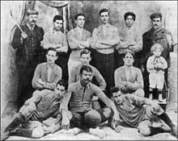
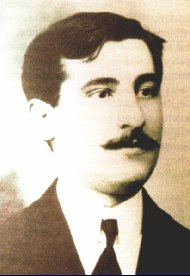

Primera foto del equipo de fútbol de Boca Juniors, en 1906, luego de ganar la Copa Reformista. El equipo aparece con la camiseta original. El lineman a la izquierda de la foto es Juan Brichetto, quien elegiría luego los colores azul y amarillo, y dos veces presidente del club.

Esteban Baglietto: uno de los cinco adolescentes que fundaron Boca Juniors, su primer presidente y guardavalla del primer equipo del club. Su casa de Ministro Brin 1232, es considerada oficialmente como la sede fundacional, debido a que allí comenzó la reunión del 3 de abril de 1905, en la que se creó el club, y que finalizó en un banco de la plaza Solís, ubicada enfrente.4